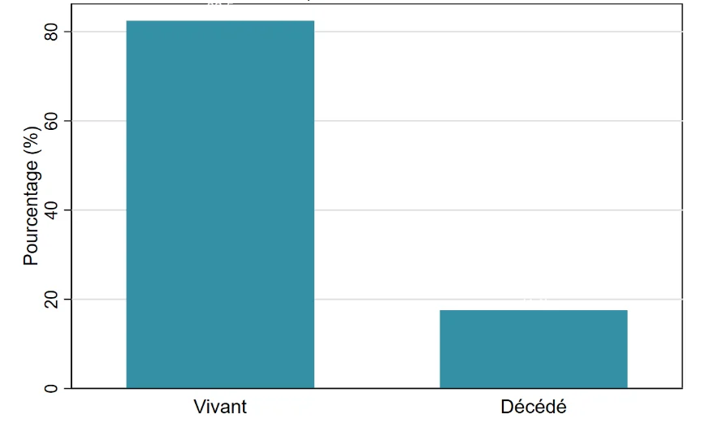
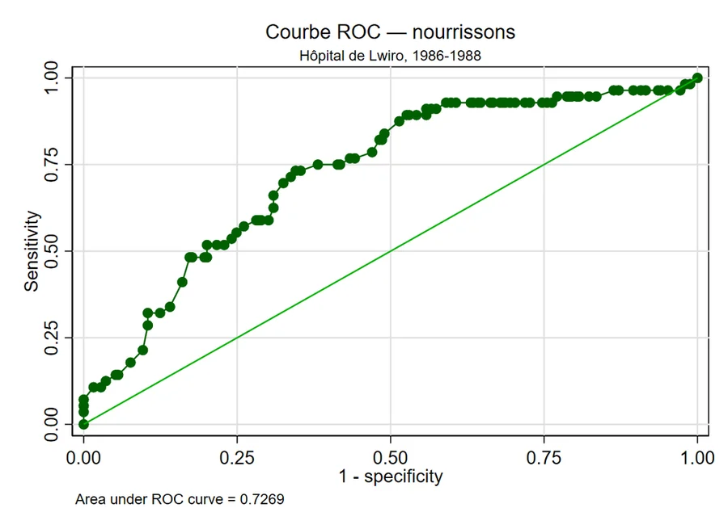
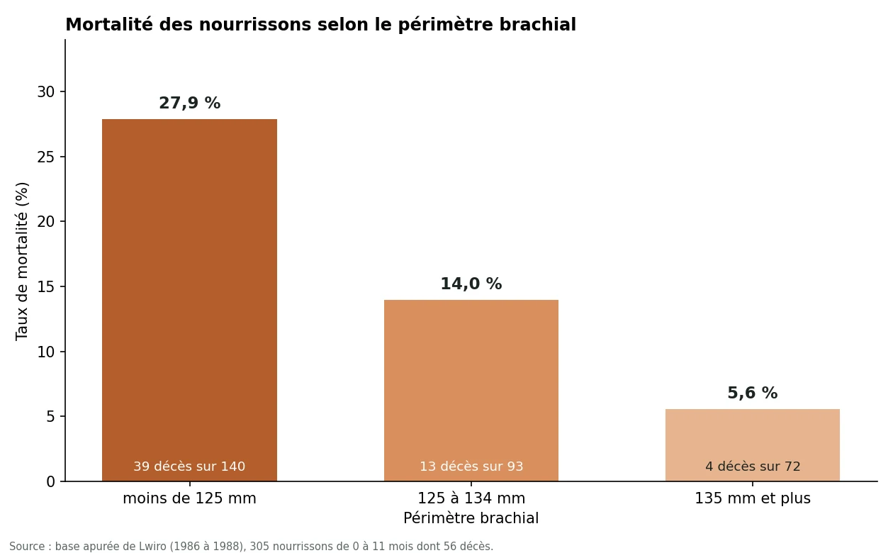
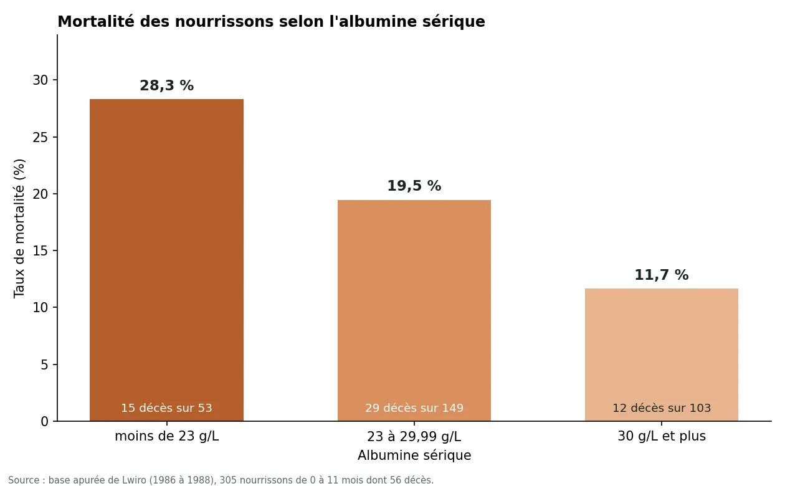

Mortalité des enfants hospitalisés à Lwiro (1986 à 1988)
De dix fichiers hétérogènes à une régression logistique : apurement, analyse descriptive et facteurs de décès chez les nourrissons d'un hôpital du Sud-Kivu.
Contexte
L'hôpital de Lwiro se trouve dans la province du Sud-Kivu, en République démocratique du Congo. Les données rétrospectives couvrent les enfants hospitalisés entre 1986 et 1988 et proviennent de dix fichiers aux formats variés (.dta, .xls, .xlsx et .sav).
Objectif
Mesurer l'ampleur de la mortalité intra-hospitalière des enfants, puis identifier les facteurs associés au décès chez les nourrissons de moins de 12 mois, dont le profil de risque diffère de celui de l'ensemble des enfants.
Comment le projet a été mené
Harmonisation et concaténation
Noms de variables alignés sur le dictionnaire de données, puis concaténation des dix bases (1 139 observations) et suppression de 10 doublons : 1 129 enfants.
Fusion et valeurs aberrantes
Fusion avec les données sociodémographiques (1 129 observations appariées, aucune non appariée). Les valeurs hors plage du dictionnaire sont traitées comme manquantes.
Imputation et recodage
Médiane pour les variables quantitatives, mode pour les variables dichotomiques peu manquantes et tirage aléatoire pour les variables très manquantes. Périmètre brachial, albumine et rang de naissance sont recodés en classes cliniques.
Analyse descriptive et bivariée
Létalité avec intervalle de Wilson, tests du khi-deux ou exact de Fisher, V de Cramér, tests t, Mann-Whitney, ANOVA ou Kruskal-Wallis. Huit prédicteurs sur quinze sont associés à l'issue sur l'ensemble des enfants.
Régression logistique chez les nourrissons
Sélection backward (seuil de sortie de 5 %) sur 305 nourrissons dont 56 décès : l'âge, le périmètre brachial et l'albumine sont retenus.
Diagnostics et recommandations
Hosmer-Lemeshow (p = 0,396), linktest, matrice de classification et courbe ROC, puis recommandations autour du dépistage nutritionnel précoce différencié selon l'âge.
Ce que montrent les résultats
| Variable | Odds ratio | IC à 95 % | p |
|---|---|---|---|
| Âge, par mois | 0,889 | 0,803 à 0,985 | 0,024 |
| Périmètre brachial 125 à 134 mm (réf. moins de 125 mm) | 0,463 | 0,226 à 0,949 | 0,035 |
| Périmètre brachial 135 mm et plus | 0,192 | 0,065 à 0,573 | 0,003 |
| Albumine 30 g/L et plus (réf. moins de 23 g/L) | 0,313 | 0,126 à 0,778 | 0,012 |




Principaux enseignements
- La létalité hospitalière globale est de 17,5 %, soit près d'un enfant sur six.
- Chez les nourrissons, le taux de décès passe de 27,9 % (périmètre brachial inférieur à 125 mm) à 14,0 % puis 5,6 % (135 mm et plus), et de 28,3 % à 19,5 % puis 11,7 % selon le niveau d'albumine.
- Chaque mois d'âge supplémentaire réduit le risque de décès de 11,1 % (odds ratio de 0,889).
- Les œdèmes, la diarrhée, le paludisme et la situation matrimoniale, associés au décès sur l'ensemble des enfants, ne sont pas retenus chez les nourrissons : les facteurs nutritionnels et l'âge dominent.
- Limite importante : la sensibilité du modèle n'est que de 5,4 % (3 décès détectés sur 56 au seuil par défaut) et la sélection backward part de 18 termes pour 56 décès, ce qui expose à un risque de surajustement.
Compétences mobilisées
Chaque compétence renvoie à la matrice de preuves, avec le nombre de sources qui l'ont fait acquérir.
Statistique & Économétrie
Data & Programmation
Gestion de projet & Performance
Suivi-Évaluation & Humanitaire
Ce qui est publié
- datacleaning_stata1.do et analyse_stata1.do : apurement puis analyses
- Deux journaux d'exécution Stata, dont les chemins personnels ont été retirés
- Rapport-Mortalite-infantile-Lwiro.pdf : rapport de 56 pages
- Quatre figures et README.md
Tout est consultable
Le dépôt GitHub contient les fichiers du projet et un README qui explique la structure et la démarche.
Ouvrir le dépôt ↗